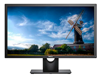
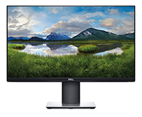

Algunos monitores con tecnología IPS

Monitor Dell E2417H
Disfrutá de todas las cualidades que el monitor Dell E2417H tiene para ofrecerte.
Percibí las imágenes de una manera completamente diferente y complementa cualquier espacio ya sea en
tu casa u oficina.
Un monitor a tu medida
Con tu pantalla LED no solo ahorrás energía, ya que su consumo es bajo, sino que vas a ver colores
más nítidos y definidos en tus películas o series favoritas.
Una experiencia visual de calidad
Este monitor de 23.8" te va a resultar de gran comodidad para estudiar, trabajar o ver una película
en tus tiempos de ocio. Asimismo, su resolución de 1920 x 1080 te permite disfrutar de momentos
únicos gracias a una imagen con gran nitidez.
Comparar

Monitor Dell P2419H
Disfrutá de todas las cualidades que el monitor Dell P2419H tiene para ofrecerte.
Percibí las imágenes de una manera completamente diferente y complementa cualquier espacio ya sea en
tu casa u oficina.
Un monitor a tu medida
Con tu pantalla LED no solo ahorrás energía, ya que su consumo es bajo, sino que vas a ver colores
más nítidos y definidos en tus películas o series favoritas.
Una experiencia visual de calidad
Este monitor de 24" te va a resultar de gran comodidad para estudiar, trabajar o ver una película en
tus tiempos de ocio. Asimismo, su resolución de 1920 x 1080 te permite disfrutar de momentos únicos
gracias a una imagen con gran nitidez.
Comparar

Monitor BenQ GW3480
Disfrutá de todas las cualidades que el monitor BenQ GW2480 tiene para ofrecerte.
Percibí las imágenes de una manera completamente diferente y complementa cualquier espacio ya sea en
tu casa u oficina.
Un monitor a tu medida
Con tu pantalla LED no solo ahorrás energía, ya que su consumo es bajo, sino que vas a ver colores
más nítidos y definidos en tus películas o series favoritas.
Una experiencia visual de calidad
Este monitor de 23.8" te va a resultar de gran comodidad para estudiar, trabajar o ver una película
en tus tiempos de ocio. Asimismo, su resolución de 1920 x 1080 te permite disfrutar de momentos
únicos gracias a una imagen con gran nitidez. Por último, su tiempo de respuesta de 5 ms lo hace
ideal para gamers y cinéfilos porque es capaz de mostrar imágenes en movimiento sin halos o bordes
borrosos.
Comparar